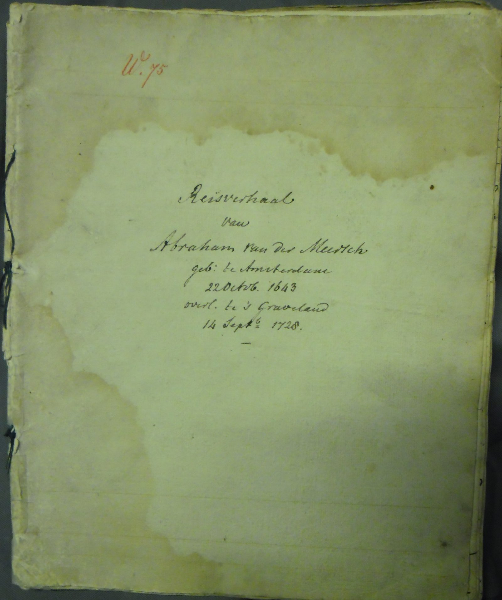

Edities
Reizen op één kaart
Alle ontsloten reizen samen op één kaart van West-Europa. Beweeg over een route om die op te lichten en klik door naar de editie; elke stip is een gedateerde pleisterplaats.

handschriftReisverhaal van Abraham van der Meersch
Kritische editie van het reisverhaal van de Hollandse koopman Abraham van der Meersch, met woordverklaringen, historische toelichting en de handschriftscan.
handschrift · grand tourJournaal van een reis naar Genève, Italië en Frankrijk
De omvangrijkste editie: het volledige grand-tour-journaal van Coenraad Ruysch, met ruim 7.000 aantekeningen van de editeur, een routekaart van de heenreis en navigatie per maand.
brievenReisbrieven van Wicher Pott
Zesentwintig brieven van de jonge Groninger Wicher Pott aan zijn vader, geschreven onderweg van Londen via Orléans naar Rome, Venetië en terug. Te lezen en te doorzoeken, of te bladeren per brief.
handschriftReijse gedaen int jaar 1662
Een korte pleziertocht van Hoorn langs Antwerpen en Brussel, met opgeloste abbreviaturen, doorhalingen en marginale datums uit het handschrift.
handschrift · FransReisbeschrijving in Frankrijk
Een dichte, deels Franstalige reisbeschrijving door Frankrijk, met lacunes en de aantekeningen van de transcribent als noten.
handschriftJournael en aantekeninge
Hinlopens uitvoeriger tweede reis, folio na folio door Frankrijk en Engeland.
handschrift · LatijnMores … consuetudines Parisienses
Waargenomen zeden en gewoonten van Parijs, in Latijn en Nederlands opgetekend.
handschrift · onderrichtingOnderrigt voor een reiziger
Geen reisverslag maar reisadvies: wat een jonge reiziger in den vreemde behoort waar te nemen en te leren.
handschrift · verzenJournaal van het plesier rijsje
Een pleziertochtje vanuit Middelburg, luchtig op rijm gezet — de enige berijmde tekst in de reeks.